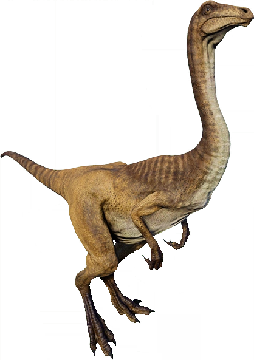
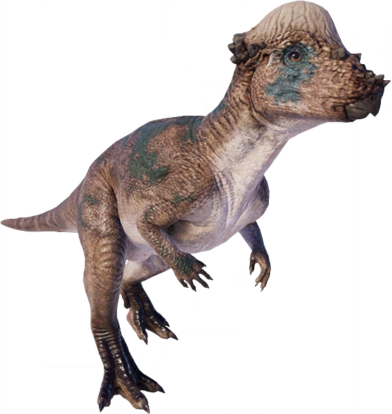
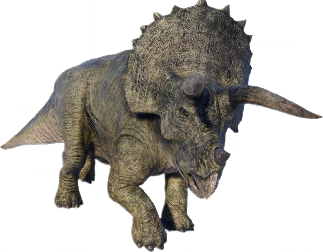
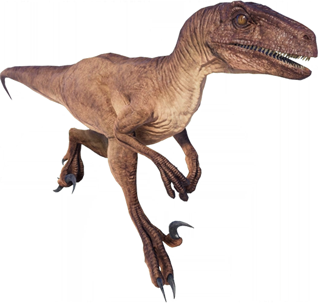

The Lost World: Jurassic Park, was based on the sequel novel to Jurassic Park, again by Michael Crichton.
Plot
Four years after the disaster at Jurassic Park, a wealthy British couple have decided to take a vacation on Isla Sorna, an island 87 miles southwest of Isla Nublar. The couple's daughter wanders off into the wilderness, inadvertently encountering and being attacked by a pack of Compsognathus. The resulting lawsuit filed against InGen leads to John Hammond resigning from his position as CEO of InGen.
Soon after, the company is taken over by Hammond's nephew, Peter Ludlow. Meanwhile, mathematician Dr. Ian Malcolm, despite having signed an agreement that forbade him from ever divulging any information on his visit to Isla Nublar, reveals to the media of InGen's attempts at cloning dinosaurs, which almost destroys his credibility as he cannot support his claims under InGen's threat of legal action.
Hammond then calls upon Malcolm and asks for his help. Much to Malcolm's surprise, InGen has a second island, named Isla Sorna, where the original research was performed, and the animals were manufactured. A hurricane forced an evacuation of the island, and the dinosaurs were released into the wild at the very last minute, in order to mature and thrive in their own separate environment. Ludlow persuades InGen's investors that a dinosaur theme park is still a viable idea, and decides to exploit the second island by capturing several animals, and bring them to San Diego, where InGen is finishing construction on an abandoned Jurassic Park stadium. Having had a change of heart, Hammond is trying to prevent this: if he gathers a team of experts to document the dinosaurs in their new habitat, he may just rally enough public support to save the ancient animals from life in captivity. Malcolm initially declines, but then learns that his girlfriend, paleontologist Dr. Sarah Harding, is already on the island by herself. He then reluctantly agrees to go in an attempt to rescue Sarah. As he prepares for the trip, Ian is visited by his daughter, Kelly Curtis (one of the three children he mentions having in the first film).
The rest of Hammond's team (formed as the "Gatherers") consists of engineer Eddie Carr (who built the custom vehicles the team use, including two solar-powered Mercedes SUVs and a special trailer with an onboard laboratory), and wildlife documentarian Nick Van Owen. While in the garage, Ian reunites with his daughter, Kelly. The two talk about their ways of life, but as Kelly is skeptical about her father going to Isla Sorna, it causes a rift between the two. They arrive at the island via boat and find Sarah in the wilderness, taking photographs. After escaping an alarmed Stegosaurus herd, the group returns to their camp site and find Kelly, who secretly stowed away on the trailers. A furious Ian tries to contact the boat, but unfortunately, this is interrupted as InGen has officially sent their second team to the island to hunt down and capture the dinosaurs.
The InGen Hunters arrive with all-terrain vehicles and equipment, carried by Chinook and Huey helicopters. InGen's team is being led by big game hunter Roland Tembo and his hunting partner, Ajay Sidhu, who have come to the island to fulfill Roland's dream of hunting down a male Tyrannosaurus. Also accompanying the team is well known paleontologist Dr. Robert Burke and Ludlow himself, who has decided to personally supervise the mission.
By the time night falls, the InGen team has already captured several dinosaurs, including Parasaurolophus, Pachycephalosaurus, Triceratops, Gallimimus, Compsognathus and Stegosaurus. Meanwhile, Roland and Ajay discover a Rex nest and capture the infant inside to use it as bait for the adult Rexes. As Peter prepares for a live stream via satellite video transmission to the InGen board room, Nick tells the others that, because Ludlow has arrived and is capturing the animals, he must carry out Hammond's wish, and free them (Nick is later revealed by Roland to be a member of Earth First!, a radical environmental advocacy group who engage in sabotage to achieve their goals). Nick and Sarah then sneak into the camp to release the dinosaurs from their cages and cut the fuel lines of the InGen vehicles. In the ensuing carnage, car explosions set off fires which quickly spread through the camp and Pachycephalosaurus, Stegosaurus, and Triceratops obliterate the tents around the camp and injuring several people while they and the other dinosaurs escape. One burning vehicle is jettisoned into the air, directly aiming for a tree where Roland and Ajay are atop at, but both men barely jump down for safety.
Nick soon finds and frees the chained infant Tyrannosaur and decides to bring it back to the trailer, so that he and Sarah may try to fix its leg, which had accidentally been broken earlier by a drunken Ludlow. Kelly becomes highly animated when hearing the infant's cries, so Ian takes her to the "high hide", an observation platform that can be hoisted into the forest canopy. As Eddie accompanies Kelly on the high hide, Ian returns to the trailer just before the Rex parents arrive in search of their infant. Sarah returns the infant to its parents, who realize that the infant is injured, and they retaliate by attacking the double-trailer. The adults leave after forcing the rear trailer over a cliff with Ian, Nick, and Sarah trapped inside. Eddie decides to drive the remaining SUV to the trailer's wreckage and help out, inadvertently leaving Kelly behind on the high hide. He ties a rope to a tree and throws it down to Ian, Sarah, and Nick. Eddie then hooks the SUV to the trailer and tries to pull it back. As he tries to pull the trio to safety, the T. rex parents return unexpectedly, and the male tears the SUV apart before he and the female devour Eddie. The trailer plummets over the cliff's edge, but the trio manages to survive holding the rope Eddie tied to the tree. The Hunters arrive and help them climb back up.
Now, with no other choice, Ian, Sarah, Nick, and Kelly join the rival Hunters, after the dinosaur attacks have destroyed all of their vehicles and communication equipment. Sarah along with Burke explain that the reason why the T. rexes destroyed the trailers is that they changed their perceived territory by moving their infant into the camp to which they feel the need to defend the area. They now have to migrate to the abandoned operations building to radio for help. Peter warns that the area is dangerously close to a Velociraptor nesting site with Sarah adding that the T. rexes will likely follow them as well as long as they believe the group is a threat to the infant.
While trekking across the island, Dieter Stark leaves the group, who are resting, to use the bathroom, and gets lost (his friend Carter is listening to headphones and does not hear Dieter's calls for help). While wandering, Dieter is killed by a large pack of Compsognathus soon after getting lost. During the night, the camp is founded by the Tyrannosaurus duo during the night. Carter screams as a sign of a wake-up call, and despite Malcolm's advice, everyone panics and scrambles into a wild frenzy. Roland tries to shoot the male Tyrannosaurus, but after finding the bullets in his shotgun missing (Nick stole them to try to prevent him from killing the male T. rex), he uses a tranquilizer gun. The female T. rex pursues the terrified hunters, stepping on Carter to his death, and trapping the others behind a waterfall. Burke sees a snake slithering on him and panics, running straight into the waiting jaws of the Rex, and is devoured. (Ironically, it was a harmless milk snake.) Once losing the T. rex, the surviving hunters travel through an open field of tall grass. Ajay tries to warn them, shouting "DON'T GO INTO THE LONG GRASS!", but all of them are unaware of it, and are killed one by one by Velociraptors.
Ian and his gang make it through the field alive and run for cover in the operations building, while the raptors are hunting the hunters. Nick goes into the building and radios for help while Ian, Sarah, and Kelly fend off a trio of raptors. The group then reunites and boards a rescue helicopter.
On the flight out, they see that Roland has seized the male Tyrannosaur Buck, which is being prepared for its journey to the mainland. Before he leaves, Ludlow orders his men to find the infant and fly it to San Diego.
InGen invites all prestigious investors and reporters to the docks to witness the arrival of the T. rex. The ship approaches at extreme speed and crashes into the dock. Security guards board the ship and find out that the crew has perished. One guard opens the cargo door in an attempt to look for survivors. With Ian warning not to open the hold, the T. rex storms out of the cargo bay and heads into San Diego. As Peter is surveying the destruction, Malcolm tells him "Now you're John Hammond."
Ian and Sarah ask Ludlow, who is in total shock, where the infant is. He tells them that the infant was flown in by plane and is in confinement at the Jurassic Park amphitheater. They drive to the amphitheater and retrieve the infant, while the adult goes on a rampage in the city. Ian and Sarah lure the male Tyrannosaur with the infant and drive back to the docks to place the infant in the cargo hold of the ship. Peter Ludlow orders the police to shoot the rampaging adult, and then follows the couple onto the ship. However, they escape the ship, and Peter enters the cargo hold alone in search of the infant. While he attempts to catch it, the infant's father returns, and berates Peter for tampering around with its infant. Ludlow attempts to run away, but the enraged parent bites him by the leg and places him back down. Then, it leaves the execution to the infant. Sarah prepares a tranquilizer dart and shoots the T. rex as Malcolm closes the cargo hold door, trapping the animals inside.
The next morning, Ian, Sarah, and Kelly are watching a news report on TV, which is covering the dinosaurs' return trip to Isla Sorna. John Hammond is then interviewed, pleading that the island to remain preserved and isolated for the dinosaurs only. It would require human absence in order for the dinosaurs to survive. He also offers a quote by Malcolm: "Life will find a way." The final scene shows the Tyrannosaurus couple nursing their infant, the Stegosaurus herd migrating with their young, and a flock of Pteranodons glide into view and one of them lands on a tree and shrieks in celebration, ending the film.
Species Included
- Compsognathus(New)

- Gallimimus
- Mamenchiasaurus(New)
- Pachycephalosaurus(New)
- Parasaurolophus

- Pteranodon(New)

- Stegosaurus(New)
- Triceratops
- Tyrannosaurus

- Velociraptor